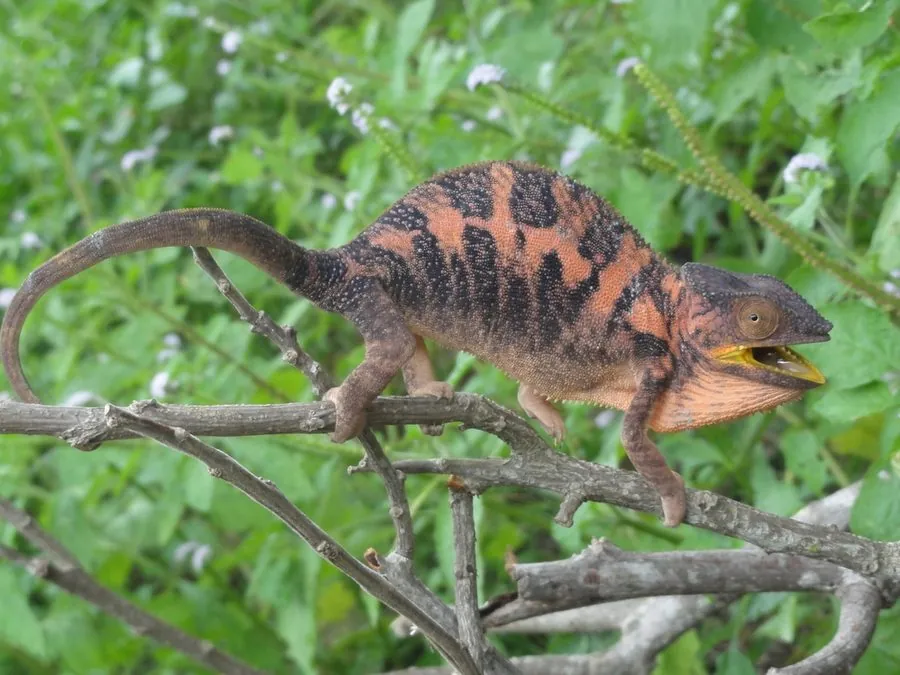

爬行动物 · 动物界
豹变色龙 Furcifer pardalis

马达加斯加岛特有的变色龙，雄性拥有鲜艳的蓝、绿、橙配色，体长约 40–55 厘米，两只眼睛可以独立转动。
- 分类
- 门脊索动物门纲爬行纲目有鳞目科变色龙科属叉角避役属
- 栖息环境
- 马达加斯加东北部低地雨林、林缘与灌木丛
- 地理分布
- 马达加斯加岛东北部及邻近的诺西贝岛等岛屿
- 保护级别
- IUCN 无危（LC）；CITES 附录 II；非中国原产
物种志
豹变色龙体长 40–55 厘米，雄性体型大于雌性，头部后方有突起的盔状结构，背部有低矮的背脊。它的体色极为多变，雄性常呈蓝绿色并布满红橙色的横带与斑点，雌性偏棕褐；体表色素细胞可在神经控制下迅速扩张或收缩，使颜色在数秒内改变。
它只生活在马达加斯加东北部的热带雨林、林缘与种植园，树栖而行动缓慢，常停在枝头等待昆虫靠近，再用可弹出的黏舌捕获猎物。变色主要不是伪装，而用于表达情绪、争夺领地和调节体温。雌性每年可产卵 2–3 窝，每窝 15–50 枚，埋于土中，孵化期约 5–8 个月；野生个体寿命约 3–5 年。国际宠物贸易曾大量捕捉野生豹变色龙，现受国际公约附录 II 管制，出口需配额。
形态与习性
- 食性昆虫为主，也捕食小型蜥蜴
- 体长雄性 40–55 cm，雌性约 35 cm
- 寿命野生约 3–5 年
- 繁殖卵生，每窝 15–50 枚，孵化期约 5–8 个月
- 活动节律昼行性，树栖活动
- 防御变色、膨胀身体并张嘴威吓
趣味知识
- 变色龙的两只眼睛可各自独立转动，分别锁定不同方向的目标。
- 它的舌头弹出速度极快，长度可超过体长的一半，靠黏液粘住昆虫。
- 豹变色龙变色多为情绪与体温调节，而非单纯的伪装。